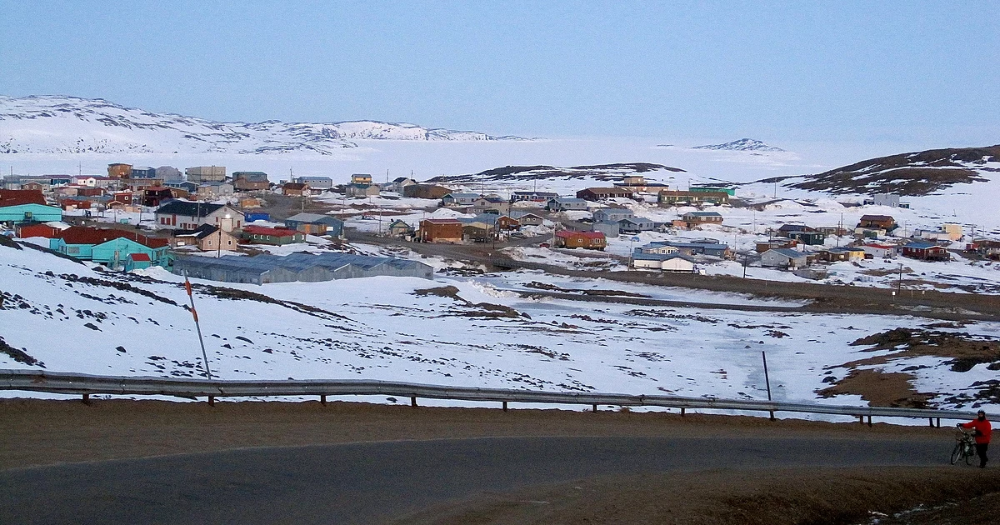

From today's featured article
Simonie Michael (1933-2008) was a Canadian politician from the eastern Northwest Territories (later Nunavut) who was the first Inuk elected to a legislature in Canada. Before becoming involved in politics, Michael worked as a carpenter and business owner, and was one of very few translators between Inuktitut and English. He became a prominent member of the Inuit co-operative housing movement and a community activist in Iqaluit, and was appointed to a series of governing bodies, including the precursor to the Iqaluit City Council. He became the first elected Inuk member of the Northwest Territories Legislative Council in 1966, where he worked on infrastructure and public health initiatives. Michael is credited with bringing public attention to the dehumanizing effects of the disc number system, in which Inuit were assigned alphanumerical identifiers in place of surnames. Michael helped prompt the government to authorise Project Surname, which replaced the disc numbers with names. (Full article...)
In the news
_(cropped).jpg)
- Bola Tinubu (pictured), of the ruling All Progressives Congress, is elected President of Nigeria.
- A train crash in Thessaly, Greece, kills at least 57 people.
- At least 67 migrants are killed in a shipwreck off the coast of Calabria, Italy.
- On the Adamant wins the Golden Bear at the Berlin International Film Festival.
- Floods and landslides leave at least 64 people dead in the Brazilian state of São Paulo.
- At the British Academy Film Awards, All Quiet on the Western Front wins Best Film and six other awards.